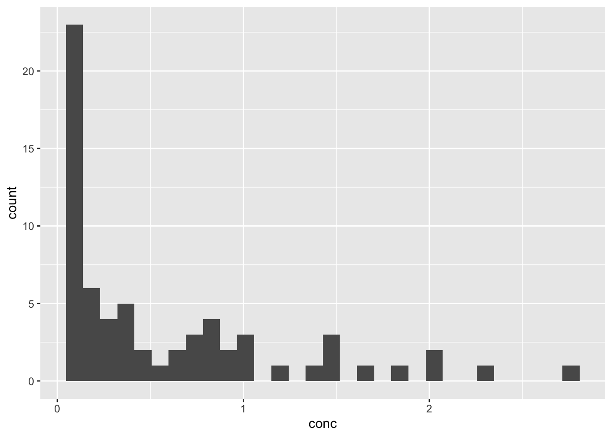

Histogram Tutorial
0.1 Histograms
Histograms are a nice way to look at the distribution of a continuous variable, and a common use of {ggplot2}. This can help you see if a distribution is skewed, has a single mode, or is bi- (or tri-)modal, and whether assuming a normal distribution is reasonable.
The basic use of the geom_histogram requires:
1. a dataset in the ggplot function
2. an x variable in the aesthetic function, and
3. geom_histogram()
See the example below.
## `stat_bin()` using `bins = 30`. Pick better value with
## `binwidth`.
The number of bins defaults to 30. You can control this by setting the number of bins, or the binwidth in units of x, within the geom_histogram() function.
Try this out in the exercise below. And while you are at it, set a contrasting fill and color for the bars.
0.1.1 Exercise
0.1.1.1 Set bins or binwidth, set color and fill
Note that if you set both bins = M and binwidth = N, binwidth will override the bins setting. A very wide binwidth or small number of bins can sometimes be misleading, so start with narrow bins and then scale back to see the true distribution. We can already see that this one is clearly right-skewed. Set the binwidth to a number less than 1 to get a fine map of the distribution. Adjust it up and down until you feel like you are getting a true summary of the distribution.
ggplot(data = Indometh,
aes(x=conc)) +
geom_histogram( binwidth = ---)ggplot(data = Indometh,
aes(x=conc)) +
geom_histogram( binwidth = 0.25)0.1.2 Exercise map to color
You can also map the counts to a color, using the calculated statistic (stat) named count. This is prefixed and suffixed with two dots, so that it looks like ..count..In the aesthetic function below, map the fill aestheticto ..count..
with bins = 12 in geom_histogram()
ggplot(data = Indometh,
aes(x=conc, fill = -----)) +
geom_histogram( bins = 12)ggplot(data = Indometh,
aes(x=conc, fill = ..count..)) +
geom_histogram( bins = 12)0.1.3 Exercise Adjusting Bins
You can also manually control the bins by specifying the breaks with a statement like
breaks = c(seq(from= 0, to = 3, by = 0.5))).
Note that we are using the seq function to generate a sequence quickly.
Run the code below to see this, then change the data to Theoph, a similar pK dataset for Theophylline. Run this code, then pick your own breaks to accurately reflect the distribution of concentration values. You may want to start with bins = 40 to start, then pick breaks that you like. Start with the code block below, and set the number of bins within geom_histogram. Alternatively, you can have more control if you add breaks as an argument to geom_histogram, with code like
breaks = seq(from = 0, to = 3, by = 0.25)
ggplot(data = Indometh,
aes(x=conc)) +
geom_histogram()ggplot(data = Indometh,
aes(x=conc, fill = ..count..)) +
geom_histogram(breaks = seq(from= 0,
to = 3, by = 0.333))0.2 Smooth distributions - geom_density
You can also map distributions without bins by using geom_density()
Try this with the code below -
Run the code below, then
1. change the data to Theoph, then
2. change the geom to geom_density().
This shows the overall distribution. Now to see the distribution by Subject, try
- add to the aes(group = Subject)
- add to the aes(color = Subject)
ggplot(data = Indometh,
aes(x=conc)) +
geom_histogram()ggplot(data = Theoph,
aes(x=conc, group = Subject, color = Subject)) +
geom_density()0.3 Comparing distributions
You can also compare across a limited number of categories with geom_histogram. We will use the mockstudy data of cholangiocarcinoma patients and compare age distribution by sex. In the aes mapping function, set color and fill to your categorical variable (sex), and alpha to ..count..
ggplot(data = mockstudy,
aes(x = age, color = ---, fill = ---, alpha = ---)) +
geom_histogram() +
guides(alpha = FALSE)ggplot(data = mockstudy,
aes(x = age, color = sex,
fill = sex, alpha = ..count..)) +
geom_histogram() +
guides(alpha = FALSE)